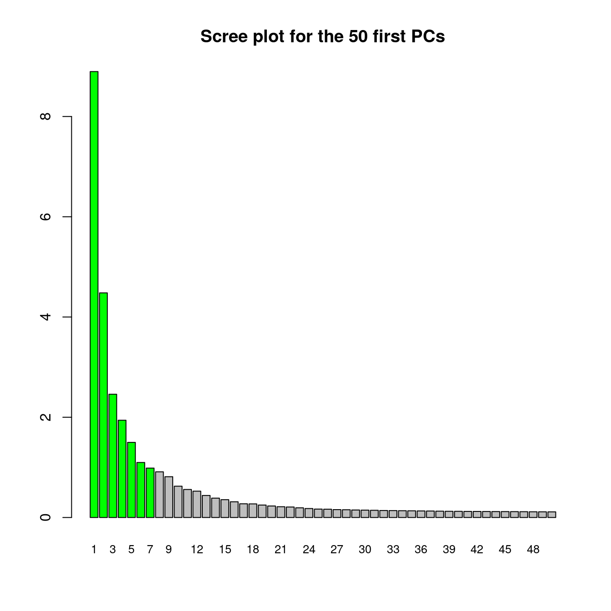
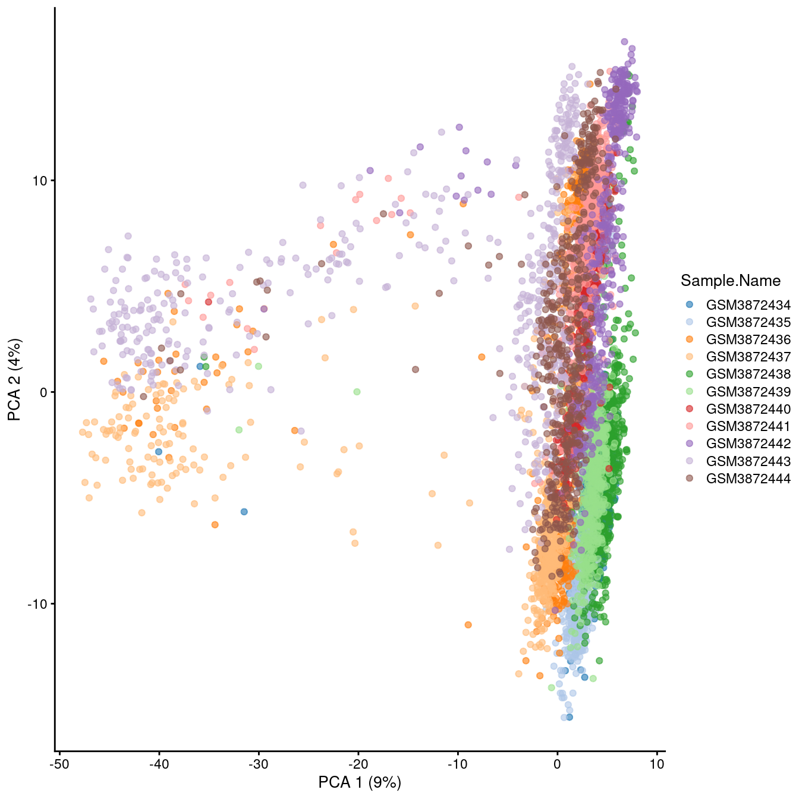
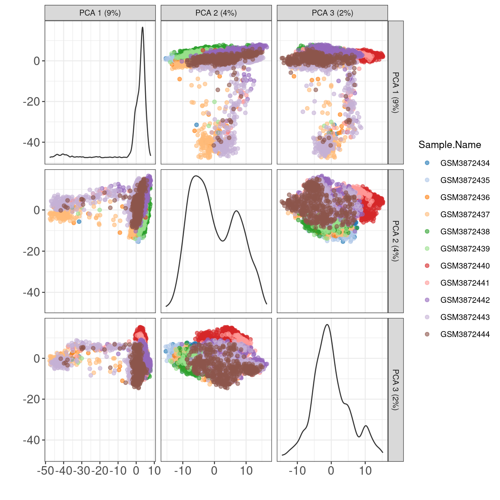
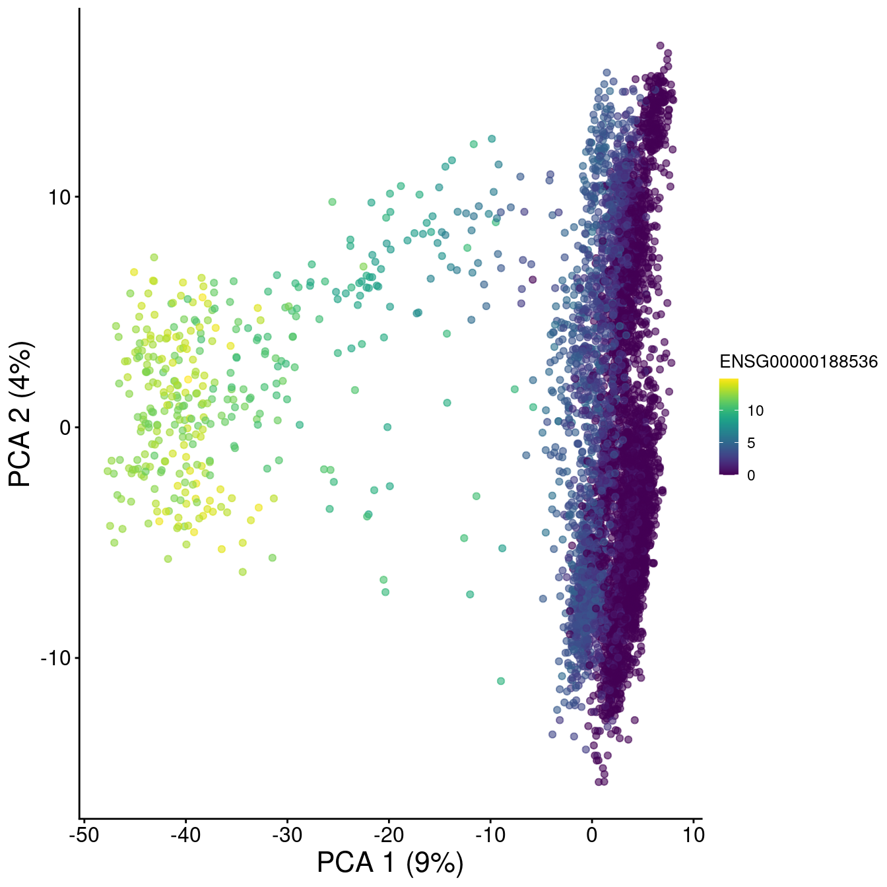
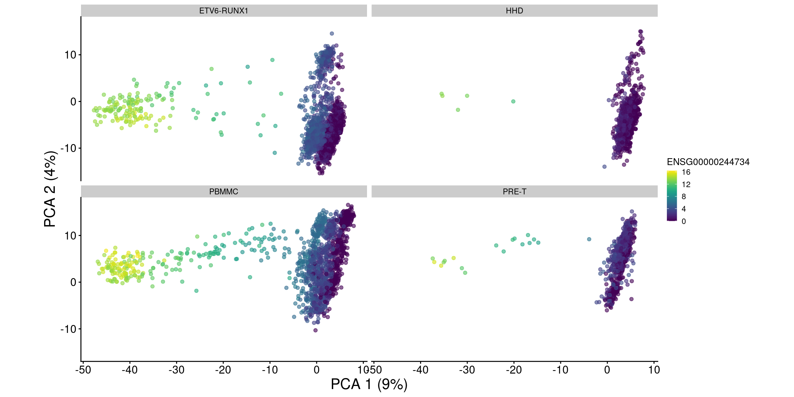
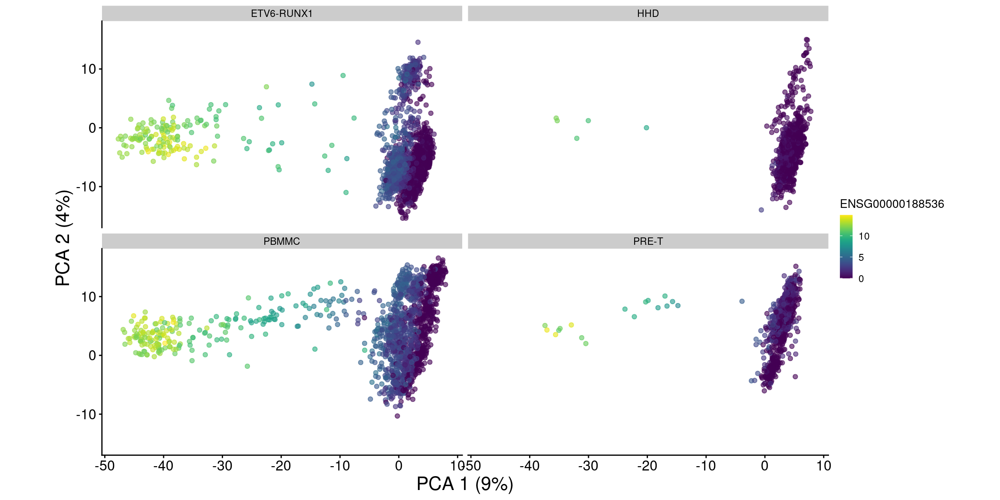
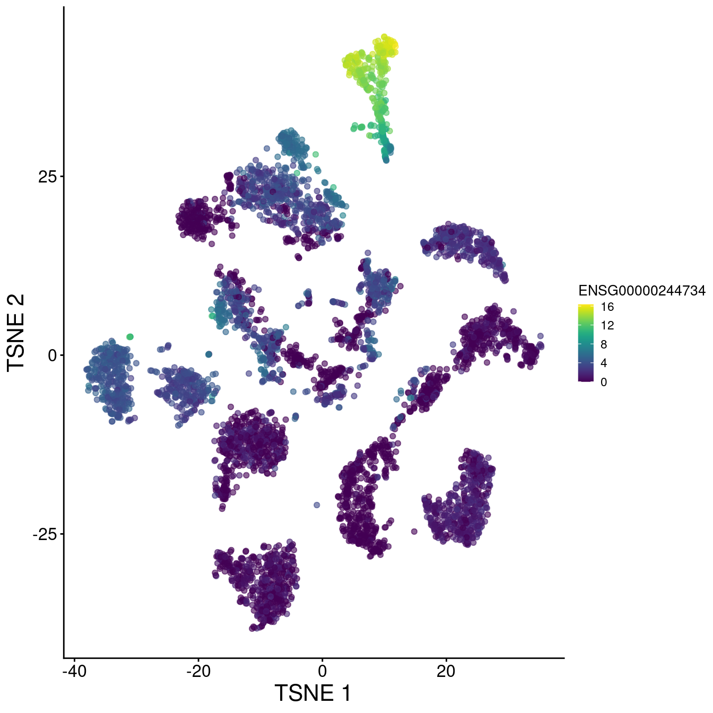
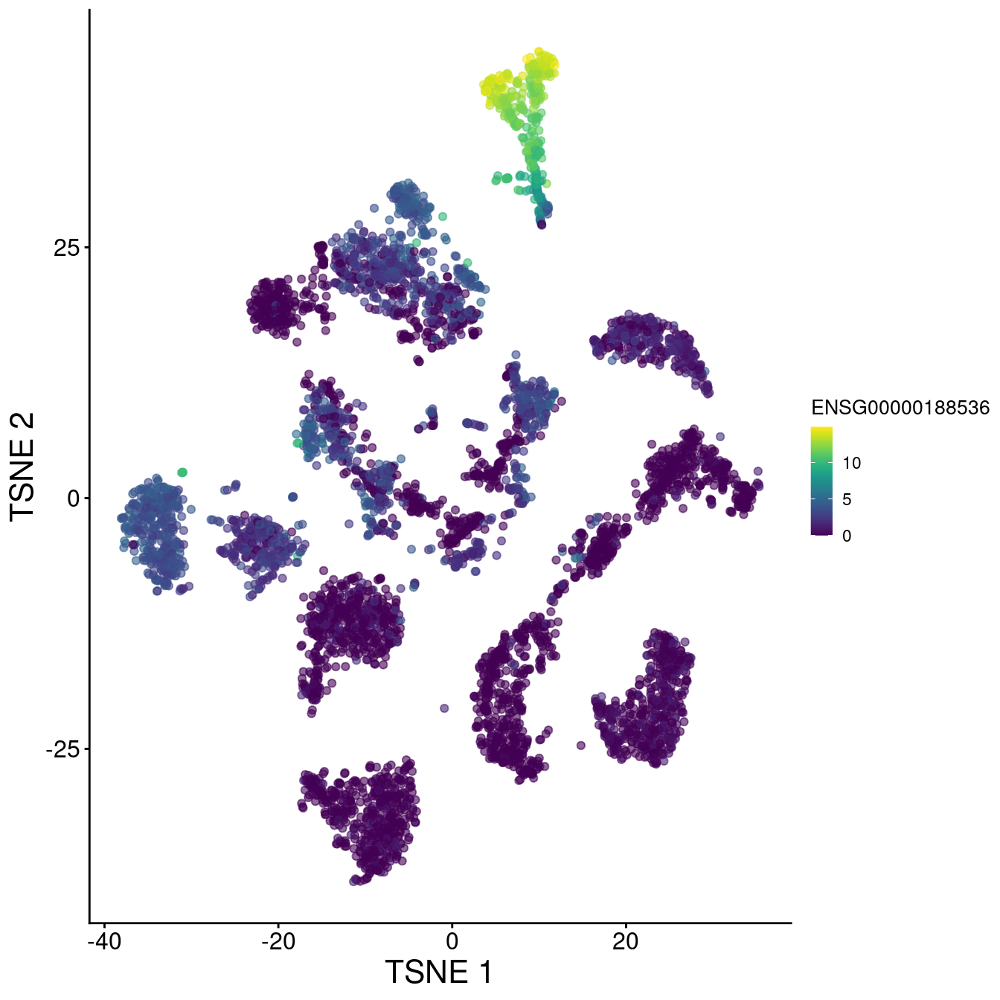
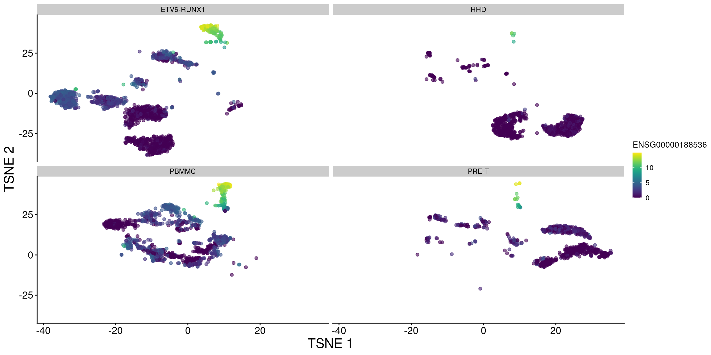

Chapter 9 Dimensionality reduction for analysis
projDir <- params$projDir
dirRel <- params$dirRel
outDirBit <- params$outDirBit
cacheBool <- params$cacheBool
nbPcToComp <- 50suppressMessages(library(ggplot2))
suppressMessages(library(scater))
suppressMessages(library(scran))
suppressMessages(library(dplyr))
fontsize <- theme(axis.text=element_text(size=12), axis.title=element_text(size=16))9.1 Load data
We will load the R file keeping the SCE object with the normalised counts for 500 cells per sample.
setName <- "caron"
setSuf <- "_5hCellPerSpl"
# Read object in:
tmpFn <- sprintf("%s/%s/Robjects/%s_sce_nz_postDeconv%s_dimRed.Rds", projDir, outDirBit, setName, setSuf)
print(tmpFn)## [1] "/ssd/personal/baller01/20200511_FernandesM_ME_crukBiSs2020/AnaWiSce/Ana1/Robjects/caron_sce_nz_postDeconv_5hCellPerSpl_dimRed.Rds"## class: SingleCellExperiment
## dim: 16629 5500
## metadata(0):
## assays(2): counts logcounts
## rownames(16629): ENSG00000237491 ENSG00000225880 ... ENSG00000275063
## ENSG00000271254
## rowData names(11): ensembl_gene_id external_gene_name ... detected
## gene_sparsity
## colnames: NULL
## colData names(16): Barcode Run ... cell_sparsity sizeFactor
## reducedDimNames(3): PCA TSNE UMAP
## altExpNames(0):#any(duplicated(rowData(sce)$ensembl_gene_id))
# some function(s) used below complain about 'strand' already being used in row data,
# so rename that column now:
colnames(rowData(sce))[colnames(rowData(sce)) == "strand"] <- "strandNum"
# also get feature selection outcome
tmpFn <- sprintf("%s/%s/Robjects/%s_sce_nz_postDeconv%s_featSel.Rds", projDir, outDirBit, setName, setSuf)
tmpList <- readRDS(tmpFn)
dec.sce <- tmpList$dec.sce
hvg.index <- tmpList$hvg.index9.2 Denoising expression values using PCA
Aim: use the trend fitted above to identify PCs linked to biology.
Assumption: biology drives most of the variance hence should be captured by the first PCs, while technical noise affects each gene independently, hence is captured by later PCs.
Logic: Compute the sum of the technical component across genes used in the PCA, use it as the amount of variance not related to biology and that we should therefore remove. Later PCs are excluded until the amount of variance they account for matches that corresponding to the technical component.
var.fit <- metadata(dec.sce)
# remove uninteresting PCs:
#options(BiocSingularParam.default=IrlbaParam())
sce <- denoisePCA(sce, technical=var.fit$trend, assay.type="logcounts")
# check assay names, should see 'PCA':
##assayNames(sce)
# check dimension of the PC table:
##dim(reducedDim(sce, "PCA"))
sce.pca <- reducedDim(sce, "PCA") # get copy of PCA matrix
tmpCol <- rep("grey", nbPcToComp) # set colours to show selected PCs in green
tmpCol[1:dim(sce.pca)[2]] <- "green"
barplot(attributes(sce.pca)$percentVar[1:nbPcToComp],
main=sprintf("Scree plot for the %s first PCs", nbPcToComp),
names.arg=1:nbPcToComp,
col=tmpCol,
cex.names = 0.8)
# cumulative proportion of variance explained by selected PCs
cumsum(attributes(sce.pca)$percentVar)[1:dim(sce.pca)[2]]## [1] 8.896404 13.377510 15.836450 17.776817 19.275430 20.373215 21.359134
Show cells on plane for PC1 and PC2:

9.3 Visualise expression patterns of some HVGs
o <- order(dec.sce$bio, decreasing=TRUE)
chosen.genes.index <- o[1:20]
dec.sce %>%
data.frame() %>%
tibble::rownames_to_column("ensembl_gene_id") %>%
right_join(data.frame(rowData(sce)[chosen.genes.index,]), by="ensembl_gene_id") %>%
select(ensembl_gene_id, Symbol, bio, FDR) %>%
arrange(-bio)## ensembl_gene_id Symbol bio FDR
## 1 ENSG00000244734 HBB 9.9171769 0.000000e+00
## 2 ENSG00000188536 HBA2 7.7794041 2.972588e-294
## 3 ENSG00000206172 HBA1 7.0043193 4.779957e-274
## 4 ENSG00000223609 HBD 3.3957008 4.577032e-172
## 5 ENSG00000019582 CD74 2.8618016 3.094419e-36
## 6 ENSG00000206177 HBM 2.4892938 8.578895e-158
## 7 ENSG00000169877 AHSP 2.3900935 2.484397e-139
## 8 ENSG00000204287 HLA-DRA 2.1588296 3.595363e-19
## 9 ENSG00000133742 CA1 1.8438387 2.361697e-106
## 10 ENSG00000147454 SLC25A37 1.4096101 7.293043e-51
## 11 ENSG00000100721 TCL1A 1.4000817 1.136107e-11
## 12 ENSG00000158578 ALAS2 1.3752702 4.585267e-98
## 13 ENSG00000165949 IFI27 1.3235939 3.388134e-107
## 14 ENSG00000090013 BLVRB 1.2749324 1.094525e-59
## 15 ENSG00000170345 FOS 1.2229340 1.435911e-06
## 16 ENSG00000211592 IGKC 1.1380972 1.871733e-25
## 17 ENSG00000090382 LYZ 1.0826247 6.153236e-81
## 18 ENSG00000170180 GYPA 1.0476546 7.220887e-79
## 19 ENSG00000143546 S100A8 0.9895714 1.802247e-73
## 20 ENSG00000171223 JUNB 0.9795045 4.161608e-08On PCA plot:
# make and store PCA plot for top HVG 1:
pca1 <- plotReducedDim(sce, dimred="PCA", colour_by=rowData(sce)[chosen.genes.index[1],"ensembl_gene_id"]) + fontsize # + coord_fixed()
# make and store PCA plot for top HVG 2:
pca2 <- plotReducedDim(sce, dimred="PCA", colour_by=rowData(sce)[chosen.genes.index[2],"ensembl_gene_id"]) + fontsize # + coord_fixed()
pca1
# display plots next to each other:
# multiplot(pca1, pca2, cols=2)
pca1 + facet_wrap(. ~ sce$source_name) + coord_fixed()

On t-SNE plot:
# plot TSNE, accessing counts for the gene of interest with the ID used to name rows in the count matrix:
# make and store TSNE plot for top HVG 1:
tsne1 <- plotTSNE(sce, colour_by=rowData(sce)[chosen.genes.index[1],"ensembl_gene_id"]) + fontsize
# make and store TSNE plot for top HVG 2:
tsne2 <- plotTSNE(sce, colour_by=rowData(sce)[chosen.genes.index[2],"ensembl_gene_id"]) + fontsize
tsne1

# display plots next to each other:
#multiplot(tsne1, tsne2, cols=2)
tsne1 + facet_wrap(. ~ sce$source_name)
# display plots next to each other, splitting each by sample:
#multiplot(tsne1 + facet_grid(. ~ sce$Sample2), tsne2 + facet_grid(. ~ sce$Sample2), cols=2)Write R object to file
tmpFn <- sprintf("%s/%s/Robjects/%s_sce_nz_postDeconv%s_denoised.Rds", projDir, outDirBit, setName, setSuf)
print(tmpFn)## [1] "/ssd/personal/baller01/20200511_FernandesM_ME_crukBiSs2020/AnaWiSce/Ana1/Robjects/caron_sce_nz_postDeconv_5hCellPerSpl_denoised.Rds"rownames(sce) <- uniquifyFeatureNames(rowData(sce)$ensembl_gene_id, rowData(sce)$Symbol)
pc1 <- reducedDim(sce, "PCA")[,1]
design <- model.matrix(~pc1)
library(limma)
fit <- lmFit(logcounts(sce), design)
fit <- eBayes(fit, trend=TRUE, robust=TRUE)
topTab <- topTable(fit)library(pheatmap)
de.genes <- rownames(topTable(fit, coef=2, n=50))
heat.vals <- logcounts(sce)[de.genes,]
heat.vals <- heat.vals - rowMeans(heat.vals)
heat.vals[heat.vals > 2] <- 2
heat.vals[heat.vals < -2] <- -2
pheatmap(heat.vals[,order(pc1)], cluster_cols=FALSE)